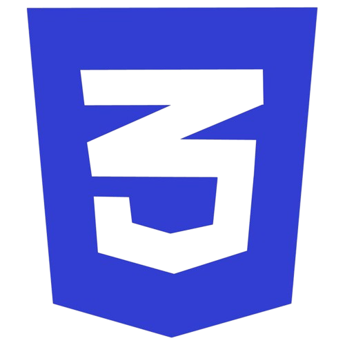
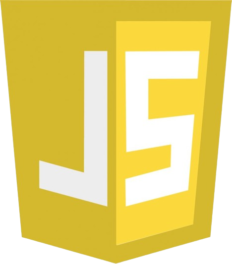
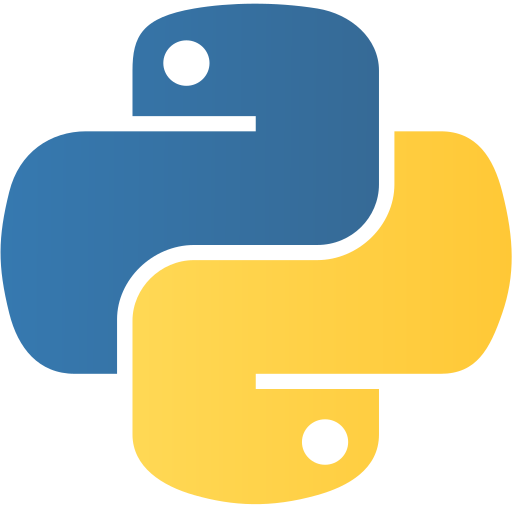
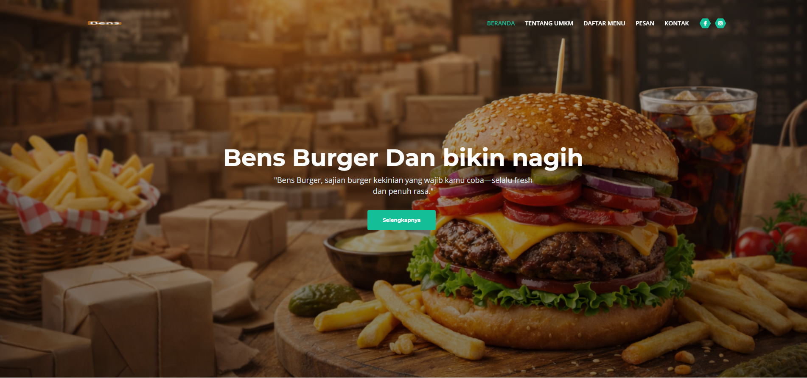
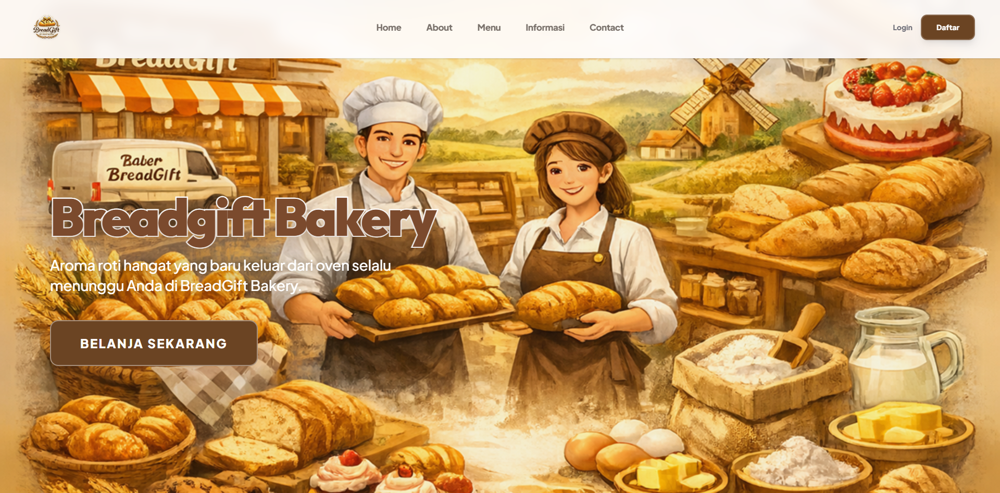
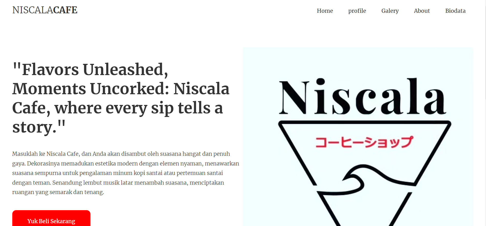

I am an Informatics fresh graduate from Universitas Teknokrat Indonesia with a
GPA of 3.54 with a degree in cumlaude, specializing in modern web development, Artificial
Intelligence (AI), and
cross-platform applications.
Throughout my academic journey, I have built mobile projects with Flutter and Android Studio,
full-stack websites with Next.js and React.js, and interactive 3D/AR/VR applications using Unity and
Blender. I also possess core competencies in machine learning, data analysis, computer networking,
and hardware/software troubleshooting.
Although I am a fresh graduate without formal industry experience, my hands-on portfolio of projects
and a collection of 29 professional IT certifications demonstrate my ability to learn rapidly,
integrate databases, and solve complex technical challenges.
01
Informatics Fresh Graduate
Recent Informatics freshgraduate equipped with solid software development fundamentals and a
drive to learn.
02
Web & Mobile Development
Experienced in building cross-platform mobile apps with Flutter and responsive frontend
designs.
03
Frontend & Next.js Frameworks
Building foundations in React.js, Next.js, and modern styling libraries like Tailwind CSS.
04
3D & AR/VR Modeling
Creating immersive 3D models and interactive environment assets using Unity 3D and Blender.
05
UI/UX & Prototyping
Designing detailed user flows, wireframes, and clickable high-fidelity prototypes using
Figma.
06
Certified Lifelong Learner
Holding 29 professional certifications spanning software engineering, AI, systems, and UX
design.
07
Ready to Grow
Prepared to learn from a professional team, adapt to modern workflows, and contribute with
dedication.
Educational Background
Academic journey and formal educational milestones
2022 – 2026 Bachelor Graduate
BACHELOR OF INFORMATICS
Universitas Teknokrat Indonesia
Informatics Study Program
GPA : 3.54 / 4.00
Cum Laude Honors
Bandar Lampung, Indonesia
Specialized in Software Engineering, Artificial Intelligence (AI), Full-Stack Web Development, and Cross-Platform Mobile Applications using Flutter. Graduated with honors, an integrated project portfolio, and 29 professional IT certifications.
2019 – 2022 Graduated
SENIOR HIGH SCHOOL
SMA YP UNILA Bandar Lampung
Natural Sciences (IPA)
Science Major (IPA)
Sports Club & Media
Bandar Lampung, Indonesia
Completed senior secondary education with specialization in Natural Sciences (IPA). Actively led the school Handball sports club and managed digital social media communications for sports competitions.
2016 – 2019 Graduated
JUNIOR HIGH SCHOOL
SMP Negeri 12 Bandar Lampung
Junior Secondary Education
Junior Secondary School
Bandar Lampung, Indonesia
Built strong academic fundamentals, analytical thinking, disciplined learning habits, group collaboration, and an early passion for computers and technology.
2010 – 2016 Graduated
ELEMENTARY SCHOOL
SD Al-Azhar 2 Bandar Lampung
Primary Education & Character Building
Primary Education
Bandar Lampung, Indonesia
Completed primary foundation education, emphasizing moral character, literacy, basic mathematics, and disciplined study ethics.
My Skills42
HTML
Web Structure

CSS
Web Styling

JAVASCRIPT
Web Interactivity
PHP
Backend Logic
SQL
Database Querying
TAILWIND
CSS Framework
REACT JS
Frontend Library
NEXT JS
React Framework
GITHUB
Version Control
FLUTTER
Mobile Framework

PYTHON
Programming Language
WEB DEVELOPMENT
Responsive Web Apps
Certified
SOFTWARE ENGR.
SDLC & System Architecture
Certified
REST API & SERVICES
Service-Oriented Architecture
Certified
ARTIFICIAL INTELLIGENCE
AI Fundamentals & Theories
Certified
AI IMPLEMENTATION
Intelligent Models & Agents
Certified
MACHINE LEARNING
Linear & Predictive Models
Certified
DATA ANALYTICS
Data Processing & Insights
Certified
INFO RETRIEVAL I
Search Engines & Indexing
Certified
INFO RETRIEVAL II
Query Parsing & Ranking
Certified
INFORMATICS LOGIC
Boolean Logic & Algorithms
Certified
INFORMATION SYSTEMS
Data Flow & System Integration
Certified
GRAPHIC DESIGN
Visual Layout & Digital Assets
Certified
UI / UX DESIGN
User Flows & Wireframing
Certified
UX RESEARCH & TESTING
UI Prototyping & Feedback
Certified
FIGMA
High-Fidelity Prototyping
Design Tool
GAME DESIGN & LOGIC
Gameplay Mechanics & Rules
Certified
UNITY 3D GAME DEV
Game Physics & Engine Logic
Certified
3D ANIMATION
3D Keyframing & Visual Story
Certified
BLENDER 3D
3D Assets & Environment
3D Suite
VIDEO EDITING
Transitions & Color Grading
Certified
NETWORKING & REPAIR
LAN/WAN & Hardware Diagnostics
Certified
MIKROTIK ROUTEROS
Routing, Bandwidth & Firewall
Certified
DISTRIBUTED SYSTEMS
Parallel Nodes & Cluster Computing
Certified
COMPUTER ARCHITECTURE
CPU Structure & Instruction Sets
Certified
INFORMATION SECURITY
Cryptography & Network Defense
Certified
DATA PRIVACY & COMPLIANCE
Data Rights & Privacy Defense
Certified
PROJECT MANAGEMENT
Agile, Sprints & Delivery
Certified
TECHNOPRENEURSHIP
Digital Ventures & Startups
Certified
OFFICE ADMIN TOOLS
Document & Digital Workflows
Certified
TEAM COLLABORATION
Leadership & Campus Synergy
Certified
AR / VR & METAVERSE
Virtual Spaces & Web3 101
Certified
Featured Projects
Jastipin Mobile Purchase & Delivery Service App
A mobile-based on-demand purchase and delivery service application "Jastipin" designed for optimal convenience. Connects couriers with users to search for requested goods, verify prices and locations, and place purchase orders directly with integrated service fee calculations.
FLUTTERANDROID STUDIOMYSQL
Lembah Hijau Ticket Booking Tourism Ticket Booking Mobile App
A mobile-based tourism ticket reservation application for Lembah Hijau theme park. Enables users to easily book entry tickets, check real-time ticket availability, explore attraction guides, and generate digital admission passes.
FLUTTERANDROID STUDIOMYSQL
3D AR/VR Fruit Education Interactive 3D AR/VR Educational Tool
An interactive educational application utilizing Augmented Reality (AR) and Virtual Reality (VR) with 3D models. Helps young learners explore fruit varieties, interactive 3D visualizations, and essential nutritional facts immersively.
UNITY 3DBLENDER 3DC#AUGMENTED REALITY

Ben's Burger Cafe Promotion & Order Web
A visually stunning cafe website designed to introduce premium burger
products, manage promotions, and facilitate seamless customer orders.
HTMLCSSJAVASCRIPT

Bread Gift Bakery and Gift Ordering Portal
A elegant digital storefront built for a boutique bakery and custom
gift provider, featuring premium UI layouts and catalog exploration.
NEXT.JSREACT.JSMYSQLTAILWIND
Sea Heroes Clean Up Educational Ocean Cleanup Game
An engaging educational web game where players save marine life by
collecting waste and cleaning up a polluted ocean ecosystem.
CONSTRUCT 3HTML5GAME DESIGN

Niscala Interactive Web Profile & Portal
A modern, interactive web portal designed with a clean aesthetic,
custom layout animations, and smooth navigation structure.
HTMLCSSJAVASCRIPT
Web Programming Final Project 1 Academic Web Application
An interactive academic web application demonstrating core front-end
programming, responsive UI layouts, and user inputs validation.
HTMLCSSJAVASCRIPT
El's Coffee Roastery Project 3D Assets & Environment Modeling
A creative showcase of detailed 3D models, textures, and environment
designs sculpted for immersive game experiences.
BLENDER 3D3D MODELINGGAME DESIGN
UI/UX Design Interactive Interface Prototyping
A comprehensive user experience design project featuring wireframes,
style guides, and clickable prototypes developed in Figma.
FIGMAUI/UX DESIGNPROTOTYPING
My Certifications29
Design & UX
Graphic Design Competency
Professional competency certification in visual graphic design, layouting, and creative digital assets.
AI & Systems
Computer Networking & Troubleshooting
Competency certification in LAN/WAN network configuration, hardware diagnostics, and system troubleshooting.
AI & Systems
MikroTik Training Certificate
Hands-on practical training in MikroTik RouterOS deployment, routing, firewall rules, and network bandwidth management.
Others
Office Administration Computing
Certified proficiency in office productivity software, business document processing, and digital administrative workflows.
Design & UX
2nd Winner - Animation Competition
Awarded to team VICTORY at Gebyar Mahasiswa FTIK 2024, Universitas Teknokrat
Indonesia.
AI & Data Science
Basic Artificial Intelligence
Fundamentals and core theories of Artificial Intelligence systems.
AI & Data Science
Fundamentals of Artificial Intelligence Implementation
Core artificial intelligence implementation techniques and methodologies.
AI & Data Science
Linear Models in Machine Learning
Mathematical models and linear formulas in ML algorithms.
AI & Data Science
Data Analyst
Data processing, analytics methodologies, and data visualization tools.
AI & Data Science
Junior Information Retrieval Engineer
Search engine algorithms, text indexing, and information extraction.
AI & Data Science
Junior Information Retrieval Engineer II
Advanced search index optimization, ranking evaluation, and queries parsing.
Web & Dev
Basic Software Engineering
Fundamental concepts, processes, and life cycle of software engineering.
Web & Dev
Junior Web Developer
Front-end and responsive design proficiency for modern web apps.
Web & Dev
Service Oriented Programmer
Architecture and APIs designs with service-oriented models.
Web & Dev
Software Project Manager
Project scope management, sprint planning, and software delivery workflows.
AI & Systems
Parallel and Distributed Systems
Architecture of distributed nodes and high-performance computing.
AI & Systems
Computer Organization and Architecture
Hardware structures, instruction sets, and CPU functions.
AI & Systems
Information Security
Core practices in cryptography, networking defense, and data protection.
AI & Systems
Personal Data Privacy & Protection
Principles of digital privacy and data protection regulation.
AI & Systems
Basic Informatics Logic
Core logical principles, truth tables, and Boolean algebra foundations.
AI & Systems
Basic Information System
Concepts of database management, data flows, and system integration.
Design & UX
Junior UX Designer
Research, wireframing, and user-experience prototyping principles.
Design & UX
Junior UX Designer II
Advanced UI prototyping and feedback validation architectures.
Design & UX
Junior Game Designer
Interactive mechanics, gameplay planning, and logic creation.
Design & UX
Senior Game Developer
Comprehensive game architectures, engines and physics pipelines.
Design & UX
Junior Video Editor
Transitions, overlays, color grading, and timing dynamics.
AI & Systems
Technopreneurship
Building and managing startup ventures in the digital economy.
Others
PKKMB 2022 Orientation Milestone
Campus introduction and community orientation milestone.
Others
Introduction to Metaverse in Indonesia
Overview of Web3, digital spaces, and Metaverse 101.